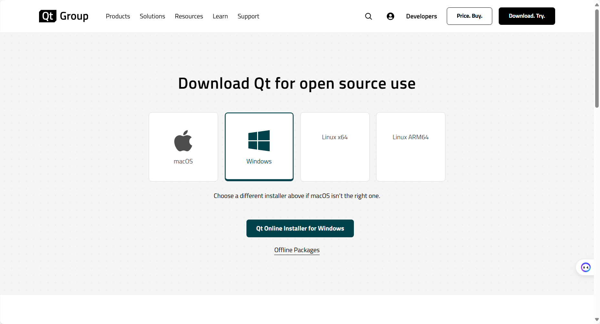
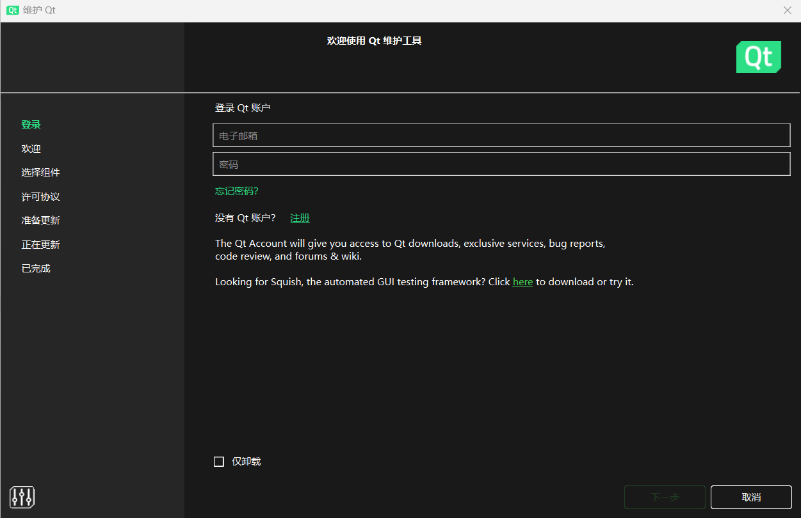
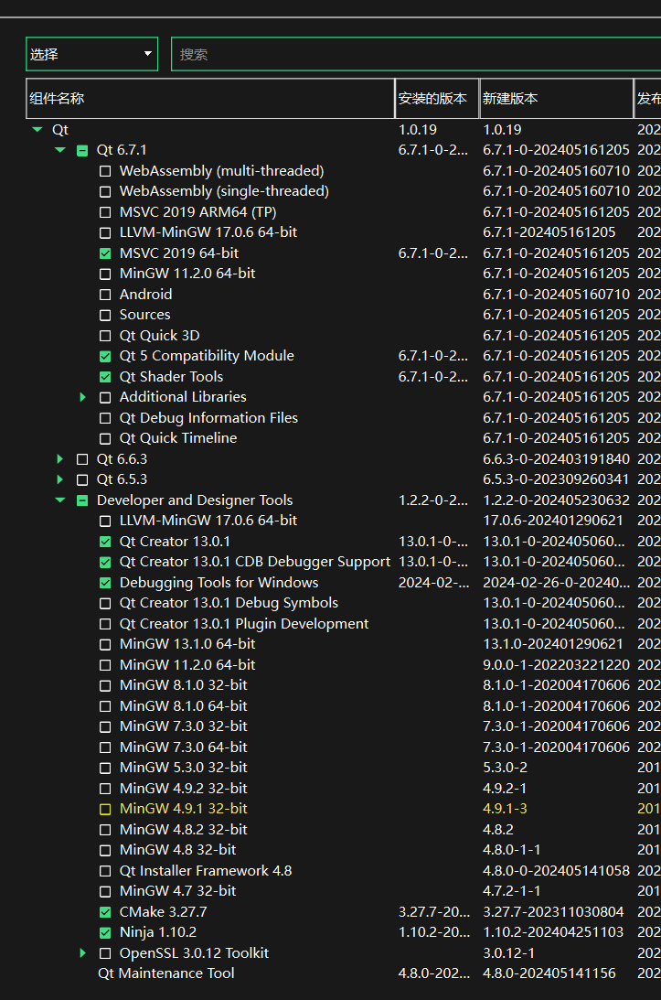
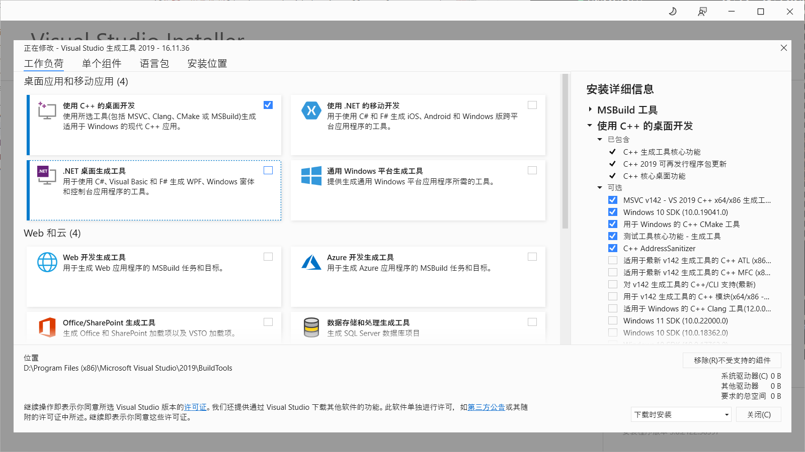
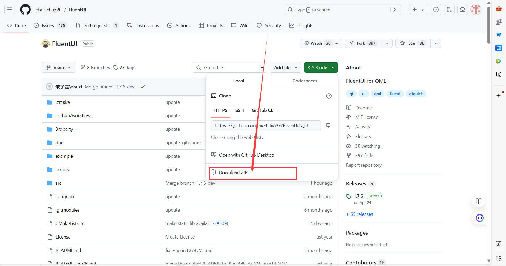
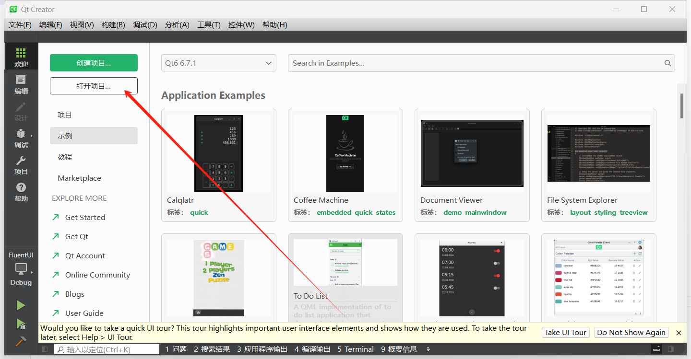
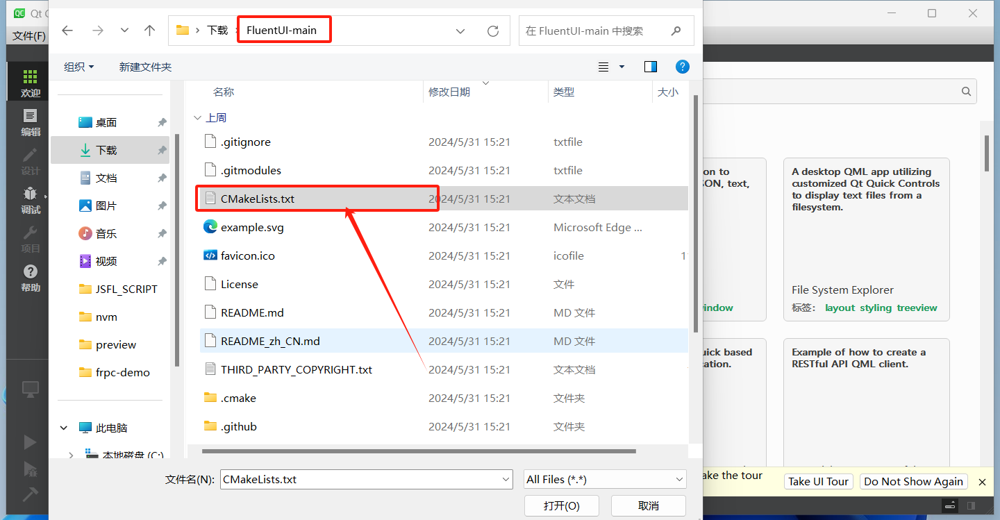
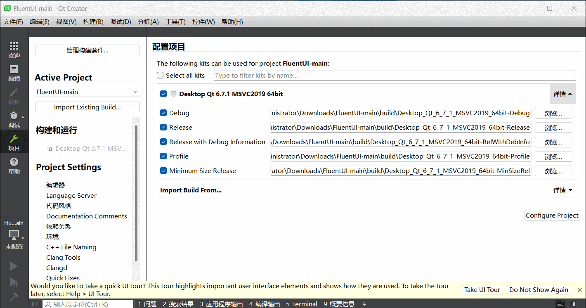
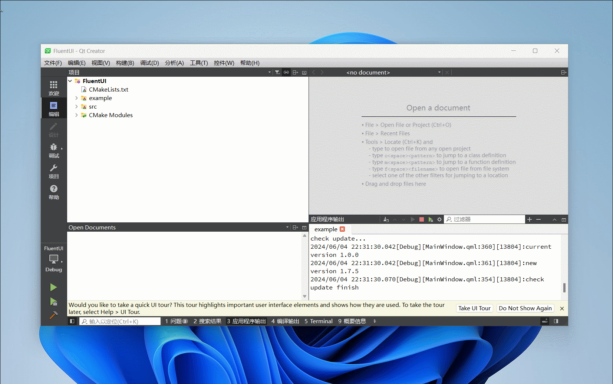

安装Qt
从这里获取 Qt Online Installer
你会看到如下页面，点击下载Qt在线安装程序 
安装向导
STEP1
输入你的账户，如果没有请注册之后输入，然后点下一步

STEP2
- MSVC-2019-64bit (Essential)
- Qt Shader Tools (Essential)
- Qt 5 Compatibility Module (Essential)

STEP3
为了正常使用MSVC编译器，还需要安装Visual Studio Build Tools.
这里是下载链接 Visual Studio 2019 Build Tools 直链

下载项目并构建
STEP1
访问 项目地址
下载项目到本地，并解压 
STEP2
打开Qt Creator->打开项目

找到刚刚解压的文件夹的根目录中的CMakeList.txt

点击构建和运行条目下的MSVC编译器，等待加载完成

Debug构建程序，如果没有问题你就可以看到example示例程序了.
